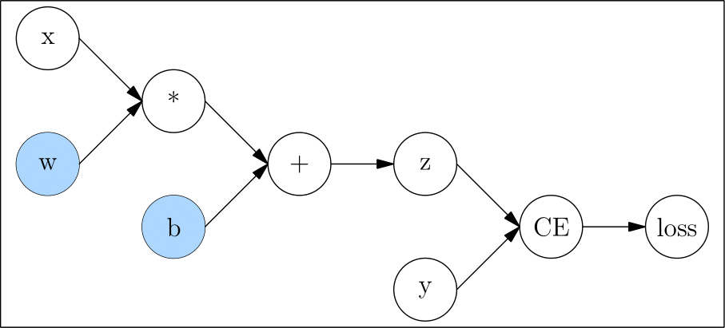

AUTOGRAD¶
The training process of a neural network is powered by backpropagation algorithm. In the backpropagation process, we update the parameters by obtaining the gradient of the loss function with respect to the parameters.
OneFlow provides an autograd engine, which can calculate the gradient of the parameters in the neural network automatically.
We will first introduce the basic concepts of the computation graph, which are conducive to understand the common settings and limitations of Oneflow's automatic differentiation. Then we will introduce OneFlow's common automatic differentiation interfaces.
Computation Graph¶
Computation graphs are composed of tensors and operators. We show this in code as below:
import oneflow as flow
def loss(y_pred, y):
return flow.sum(1/2*(y_pred-y)**2)
x = flow.ones(1, 5) # input【不确定】
w = flow.randn(5, 3, requires_grad=True)
b = flow.randn(1, 3, requires_grad=True)
z = flow.matmul(x, w) + b
y = flow.zeros(1, 3) # label
l = loss(z,y)
Corresponding computation graph：

In computation graph, the nodes only with output and with no input called leaf node, like x, w, b, and y, the nodes only with output and with no input called root node, like loss.
During the backpropagation process, the gradient of l to w and b is required to update w and b. Therefore, we need to set requires_grad as True when creating them.
Automatic Gradient¶
backward() and Gradient¶
During the backpropagation process, we need to get the gradients of l to w,b respectively, shown as \(\frac{\partial l}{\partial w}\) and \(\frac{\partial l}{\partial b}\). We only need to call the 'backward()' method of l, and then OneFlow will automatically calculate the gradients and store them in the w.grad and b.grad.
l.backward()
print(w.grad)
print(b.grad)
tensor([[0.9397, 2.5428, 2.5377],
[0.9397, 2.5428, 2.5377],
[0.9397, 2.5428, 2.5377],
[0.9397, 2.5428, 2.5377],
[0.9397, 2.5428, 2.5377]], dtype=oneflow.float32)
tensor([[0.9397, 2.5428, 2.5377]], dtype=oneflow.float32)
Gradient for Non-leaf Nodes¶
By default, only gradients of leaf nodes with requires_grad=True will be retained. The 'grad' of a non-leaf node is automatically freed during the calling of 'backward' and cannot be viewed.
Tensor.retain_grad() can be called to retain and view the 'grad' of a non-leaf node.
from math import pi
n1 = flow.tensor(pi/2, requires_grad=True)
n2 = flow.sin(n1)
n2.retain_grad()
n3 = flow.pow(n2, 2)
n3.backward()
print(n1.grad)
print(n2.grad)
we get \(\frac{\partial n_3}{\partial n_1}\) and \(\frac{\partial n_3}{\partial n_2}\) using the code above.
Output:
tensor(-8.7423e-08, dtype=oneflow.float32)
tensor(2., dtype=oneflow.float32)
Call backward() Multiple Times on a Computation Graph¶
By default, we can only call backward() once for each computation graph. For example, the following code will raise an error:
n1 = flow.tensor(10., requires_grad=True)
n2 = flow.pow(n1, 2)
n2.backward()
n2.backward()
Error message:
Maybe you try to backward through the node a second time. Specify retain_graph=True when calling .backward() or autograd.grad() the first time.
If we need to call backward() multiple times on the same computation graph, retain_graph needs to be True.
n1 = flow.tensor(10., requires_grad=True)
n2 = flow.pow(n1, 2)
n2.backward(retain_graph=True)
print(n1.grad)
n2.backward()
print(n1.grad)
Output：
tensor(20., dtype=oneflow.float32)
tensor(40., dtype=oneflow.float32)
The above output shows that OneFlow will accumulate the gradient calculated by backward() multiple times.
By calling the zero_(), we can clear the gradient:
n1 = flow.tensor(10., requires_grad=True)
n2 = flow.pow(n1, 2)
n2.backward(retain_graph=True)
print(n1.grad)
n1.grad.zero_()
n2.backward()
print(n1.grad)
Output：
tensor(20., dtype=oneflow.float32)
tensor(20., dtype=oneflow.float32)
Disabled Gradient Calculation¶
By default, OneFlow will trace and calculate gradients of Tensors with requires_grad = Ture.
However, in some cases, we don't need OneFlow to keep tracing gradients such as just wanting the forward pass for inference. Then we can use oneflow.no_grad or oneflow.Tensor.detach to set.
z = flow.matmul(x, w)+b
print(z.requires_grad)
with flow.no_grad():
z = flow.matmul(x, w)+b
print(z.requires_grad)
Output：
True
False
z_det = z.detach()
print(z_det.requires_grad)
Output：
False
Gradients for Non-Scalar Outputs¶
Usually, we call backward() on scalar loss.
However, if loss is a tensor, an error will be raised when calling backward() on loss.
x = flow.randn(1, 2, requires_grad=True)
y = 3*x + 1
y.backward()
Error message：
Check failed: IsScalarTensor(*outputs.at(i)) Grad can be implicitly created only for scalar outputs
We can get the gradient after y.sum().
x = flow.randn(1, 2, requires_grad=True)
y = 3*x + 1
y = y.sum()
y.backward()
print(x.grad)
Output：
tensor([[3., 3.]], dtype=oneflow.float32)
Please refer to the "Further Reading" section below for the analysis of the cause and solution of the error.
Further Reading¶
There are two elements \(x_1\) and \(x_2\) in Tensor x, and two elements \(y_1\) and \(y_2\) in Tensor y. The relationship between them is:
We want to get \(\frac{\partial \mathbf{y}}{\partial \mathbf{x}}\)
It doesn't make sense in mathematics, so of course an error is reported.
In fact, when the user calls y.backward(), the result desired is usually:
After call sum() on y:
At this time, when calling backward(), the gradients of \(x_1\) and \(x_2\) can be calculated:
In addition to using sum(), Vector Jacobian Product(VJP) is a more general method to calculate the gradient of the non-scalar root node. Using the above example, OneFlow will generate the Jacobian matrix according to the computation graph during the backpropagation process:
To calculate VJP, a vector \(\mathbf{v}\) with the same size as \(\mathbf{y}\) needs to be provided:
If the vector \(\mathbf{v}\) is the gradient of the upper layer in the backpropagation, the result of VJP is exactly the gradient required by the current layer.
backward() can accept a tensor as a parameter, when the parameter is \(\mathbf{v}\) in VJP. We can also use the following methods to find the gradient of a tensor:
x = flow.randn(1, 2, requires_grad=True)
y = 3*x + 1
y.backward(flow.ones_like(y))
print(x.grad)
Output：
tensor([[3., 3.]], dtype=oneflow.float32)
External links